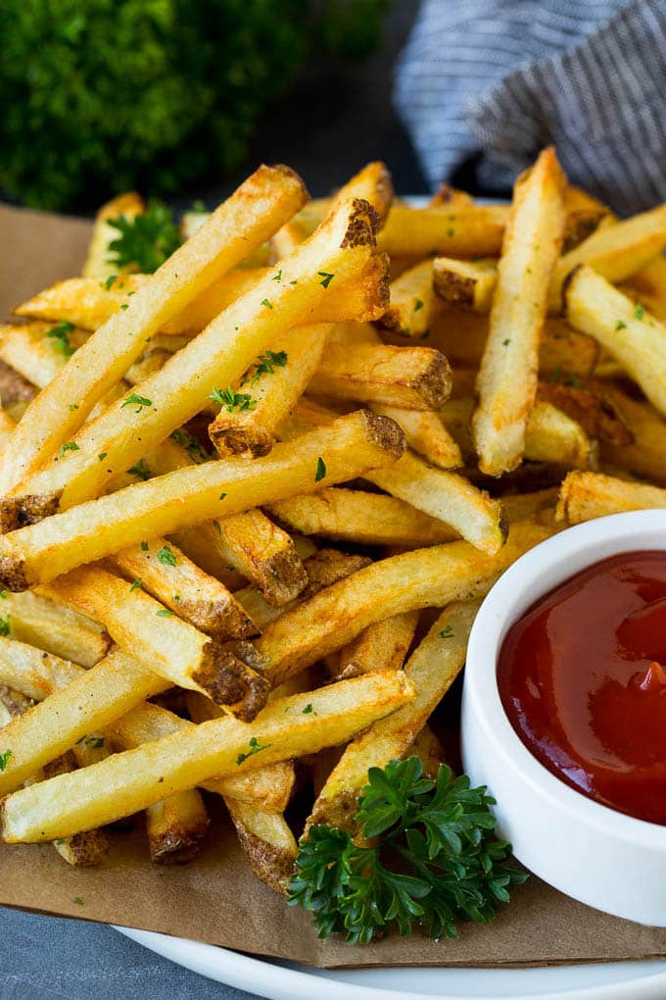

- Prep Time 20 mintues Cook time 10 mintues
- Soaking time 30 mintues Total time 1 hour
- 2 1/2 pounds Russet potatoes
- oil for frying I use vegetable or peanut oil
- salt and pepper to taste
- 1 tablespoon chopped parsley optional
- Cut the potatoes into matchsticks, either with a knife or with a french fry cutter. The potato pieces should all be similar in size.
- Place the potatoes in a bowl of cold water. Soak the potatoes for at least 30 minutes.
- Drain the water from the potatoes. Place the potatoes on a layer of paper towels and pat thoroughly with additional towels until dry.
- Pour 3 inches of oil into a large, deep pot. Heat the oil to 300 degrees F.
- Place about 1/3 of the potatoes in the pot, and cook until tender. This takes about 4-5 minutes. Repeat the process with the remaining potatoes.
- Increase the heat of the oil to 400 degrees F. Place 1/3 of the potatoes back in the pot and cook for an additional 1-3 minutes or until golden brown.
Repeat the process with the remaining potatoes. Place the cooked potatoes on a sheet pan lined with paper towels.
- Sprinkle salt and pepper to taste over the fries. Add parsley if desired, then serve immediately.
Calories: 224kcal | Carbohydrates: 51g | Protein: 6g | Fat: 14g | Saturated Fat: 6g | Sodium: 14mg | Potassium: 1182mg | Fiber: 4g | Sugar: 2g | Vitamin C: 16mg
Calcium: 37mg | Iron: 2mg